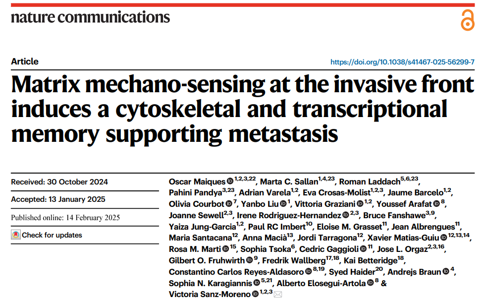
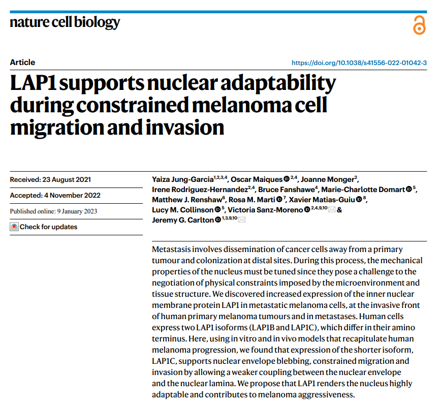
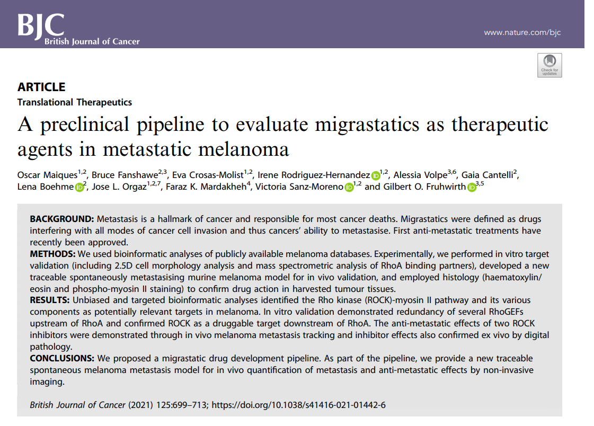
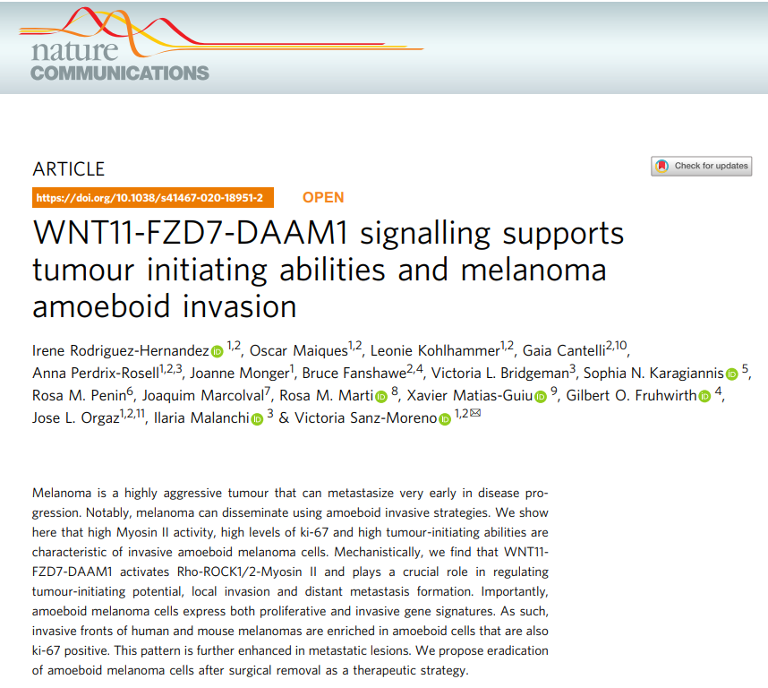
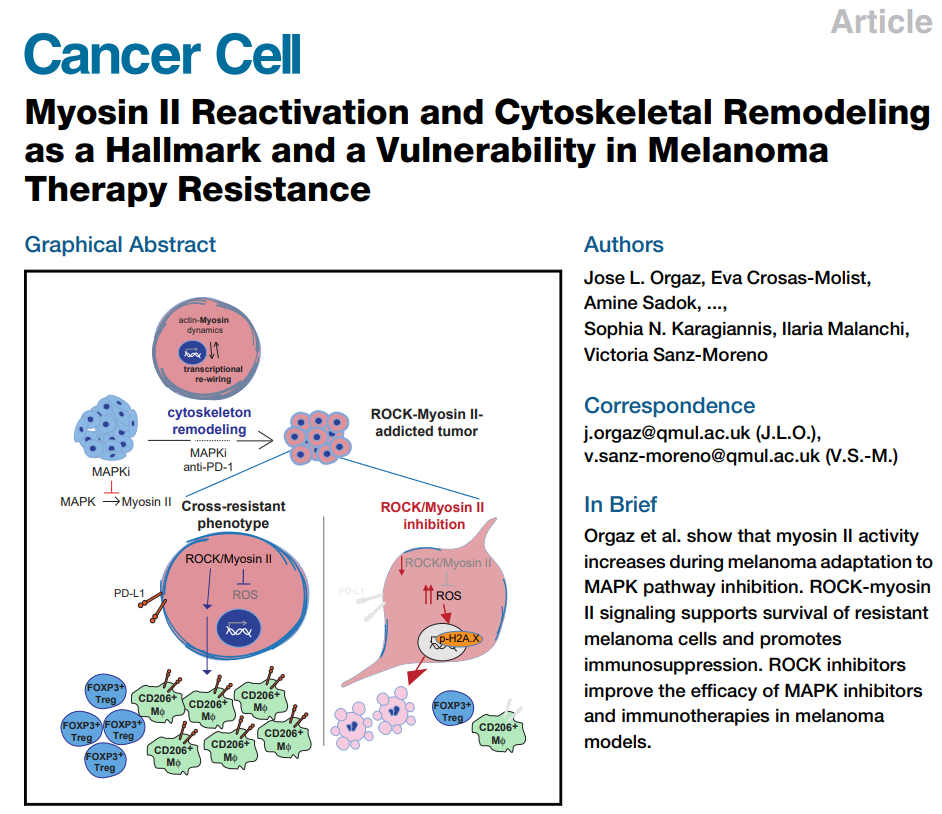
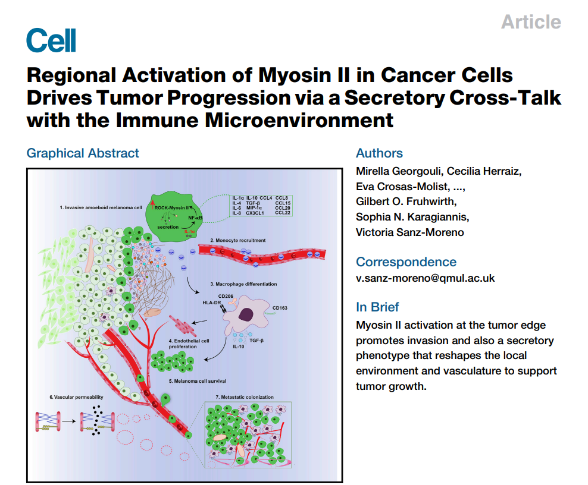

Publications
View all publications on Google Scholar.
Selected Publications

Matrix mechano-sensing at the invasive front induces a cytoskeletal and transcriptional memory supporting metastasis
Nature Communications (2025)

LAP1 supports nuclear adaptability during constrained melanoma cell migration and invasion
Nature Cell Biology

A preclinical pipeline to evaluate migrastatics as therapeutic agents in metastatic melanoma
British Journal of Cancer

WNT11–FZD7–DAAM1 signalling supports tumour initiating abilities and melanoma amoeboid invasion
Nature Communications

Myosin II Reactivation and Cytoskeletal Remodeling as a Hallmark and a Vulnerability in Melanoma Therapy Resistance
Cancer Cell

Regional Activation of Myosin II in Cancer Cells Drives Tumor Progression via a Secretory Cross-Talk with the Immune Microenvironment
Cell